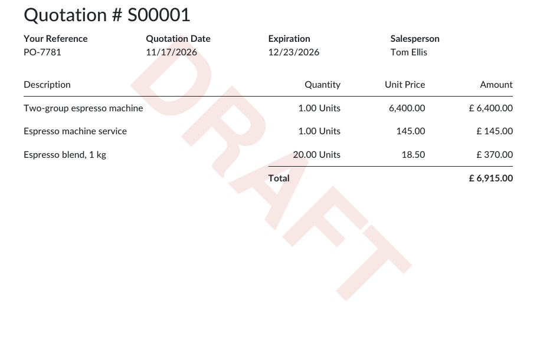
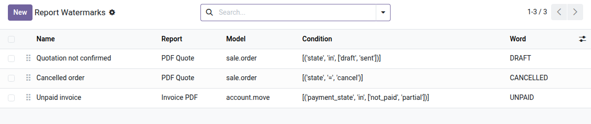

DRAFT, COPY, CANCELLED — on any report, and on every one of its pages.
An unconfirmed quotation, a cancelled invoice and a reprint come out of the printer looking exactly like the valid document. The customer cannot tell them apart, and neither can anyone at the office once the sheet is sitting on a pile. Odoo 19 offers no watermark: the only one in the codebase is used internally to mark its own demo documents, and is open to no one.
A quotation still being drafted carries its word across the page, without hiding any amount or line. Once confirmed, it will print clean — the rule's condition decides, not the user.

Three rules, three reports, three conditions. They can be reordered with the mouse: when several accept the same document, the first one wins.

Marking a document is a start; getting it signed is what comes next. The OdooSkills range offers electronic signature with certificate and fingerprint, document management, and document upload by the customer from their portal. Full catalog: apps.odooskills.com.
LGPL-3 license — compatible with Odoo 19.0 Community and Enterprise. Support: apps@odooskills.com.